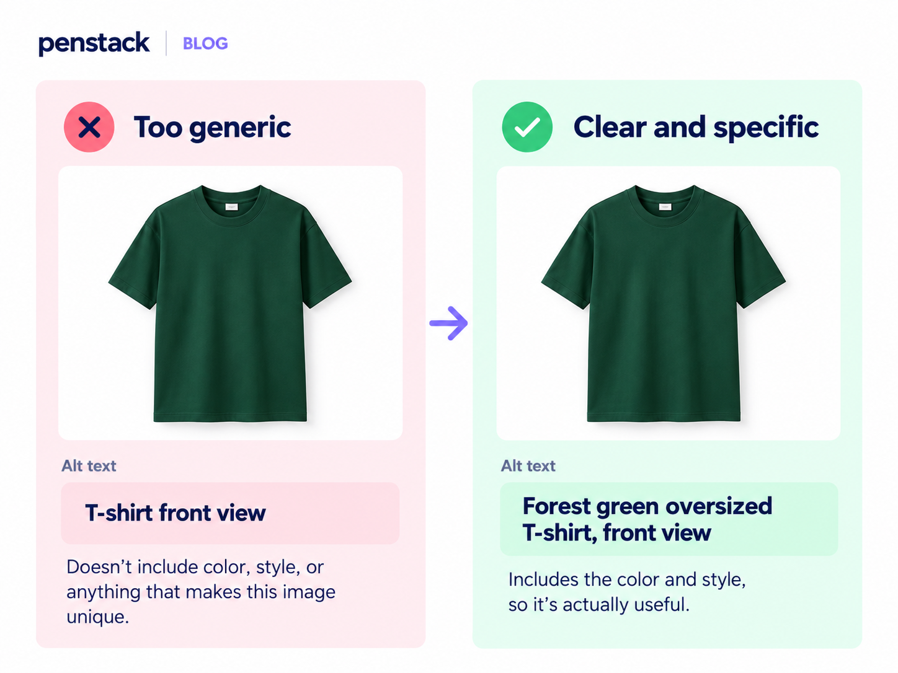
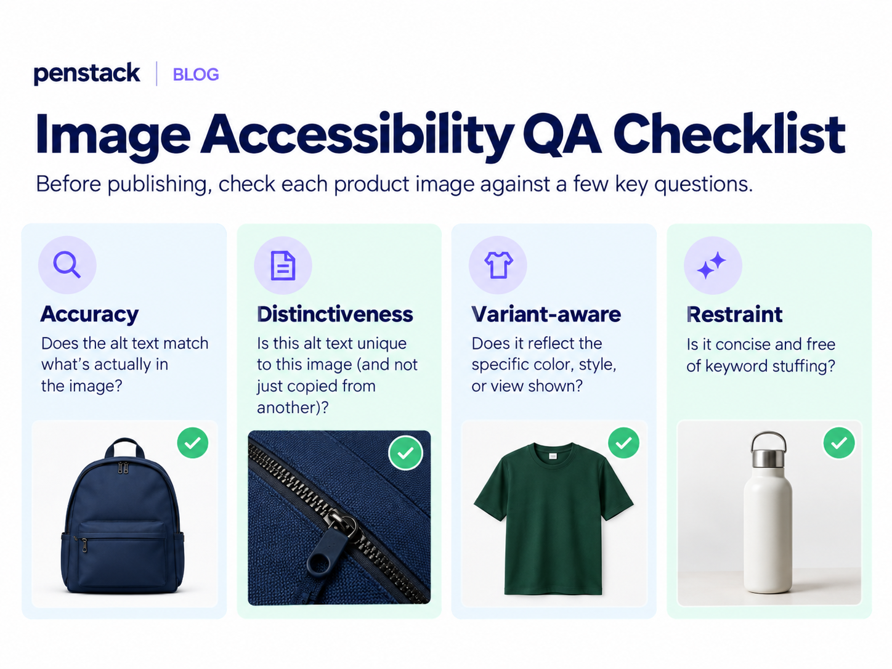
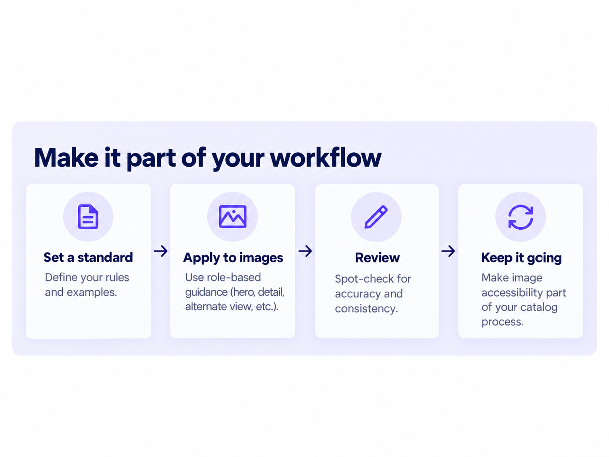

Image accessibility gets harder when you stop thinking about one product and start thinking about hundreds or thousands of them.
The challenge is no longer “Can someone write good alt text?” It becomes “Can the whole team apply the same standard without flattening every image into the same sentence?”
1. Define the role of each product image
A gallery is easier to describe consistently when the team knows why each image exists.
The image role gives reviewers a clue about what information should appear in the alt text. A detail shot should usually describe the detail. A back view should not be labeled like the hero image.
2. Create a standard that guides without over-templating
A rigid template can make every image sound robotic. A loose standard gives the team enough structure to stay consistent while preserving the information unique to each image.
Include: product identity when needed, variant/color when visible and relevant, view or shot type, and the distinctive information in that image.
Avoid: “image of,” promotional adjectives, unverified details, repeated SEO phrases, and copying identical text across an entire gallery.
3. Treat variant images as product information
If color or another variant is visually different, that difference may be essential to the shopper. The text alternative should preserve it.
For a product offered in black, cream, and green, “T-shirt front view” can erase the distinction a sighted shopper gets instantly.

4. Document the exceptions
Not every image deserves the same treatment. Teams should know what to do with decorative graphics, duplicate thumbnails, swatches, diagrams, and images containing important text.
Purely decorative images can use empty alt text. Informative diagrams or graphics may need a text alternative that communicates their meaning, not just their visual style.
If important instructions or product information appear only inside an image, the better fix may be to provide that information as real page text too.
5. Build a repeatable QA pass

Then add one catalog-level check: Are we describing the same type of image the same way across products? Consistency matters most where it helps a shopper predict what they will hear.
6. What should a team measure?
Do not measure accessibility quality only by “percentage of images with alt text.” A store can reach 100% coverage with terrible descriptions.
Where penstack fits in
Penstack separates image context from generated alt text. That makes the workflow easier to standardize: confirm the product, variant, view, and shot type, generate a concise draft, then review it against the image.
For teams and agencies, the useful standard is not “accept whatever AI writes.” It is use automation to get to a reviewable draft faster, then apply the same QA rules across every store.
The takeaway
At catalog scale, accessibility becomes an operations problem as much as a writing problem.

Put image details into the same product workflow.
penstack keeps image titles, alt text, product content, review, and publishing connected.